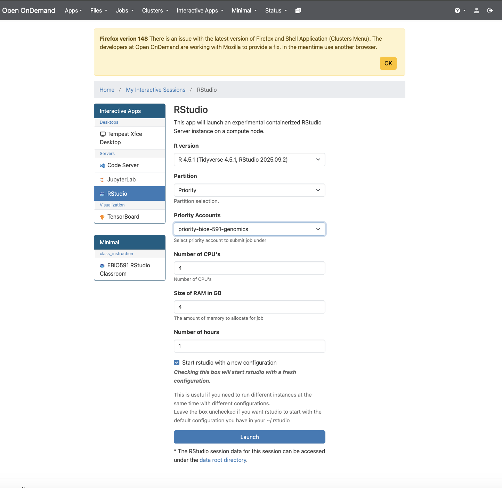

For the remainder of the semester we will transition from assembling genomic data and calling variants to analyzing these data to answer biological questions. Doing so will involve the continued use of command-line programs and .sbatch scripts but add the use of the R programming language and several packages developed for population genomics adn data visualization. Today’s lab involves a bit of both, calculating kinship coefficients for empirical data from Hauser et al. 2022 using multiple methods. You will recall their study assessed consistency of kinship estimates from both reduced representation and whole genome sequence data across a range of taxa. As is customary on publication, the authors deposited .vcf files in the Dryad archive; I have downloaded to our class directory for your use (~/bioe-591-genomes/course-materials/data/kinship/). To begin, choose a single dataset to use in the following tutorials. (As usual, you will not be able to write in this directory, so remember to change output file paths or copy a .vcf into your own subdirectory. )
Working with ngsRelate
The first tool we will use is the command-line program ngsRelate, part of the ANGSD ecosystem of methods for working with low-coverage sequence data. Importantly, ngsRelate can work directly from genotype likelihoods, incorporating uncertainty in variants into downstream estimates. However, it can also take a .vcf file with hard-called genotypes; we will follow Hauser et al. in doing so below.
As usually, ngsRelate can be installed via Mamba and the bioconda channel:
Once you have done so and confirmed the installation was successful with command ngsRelate, create an .sbatch script with the usual header information and module / Mamba initialization, updated for a new job name. You will also need to use tabix (from htslib) to index the .vcf file and bcftools query to extract sample IDs; compressing it with gzip is also a good idea. Following those commands, ngsRelate can be run in a single line:
Above, the flag -h indicates an input .vcf, -T instructs the program to use genotypes instead of Phred-scaled likelihoods (e.g., data under the PL column of a .vcf, which are often absent), -c specifies the number of cores needed, -O is the path for an output file, and -z inputs the list of sample IDs created by bcftools query. Run the script with sbatch. Even using a single core, the analysis should complete in a manner of minutes. Examine sample.ngsrelate.out using head. You should see something like the following, albeit with individual IDs in column positions 3 and 4 (scroll right to view the entire text file):
Each column is described in detail in the “Output format” section of the documentation. The most important of these are 13 through 23, which are 11 summary statistics spanning familiar (e.g., 13, which is \(R_{AB}\)) and unfamiliar (e.g., 23, “Two-out-of-three IBD”) ways of measuring kinship and inbreeding. The final columns use a two-dimensional site frequency spectrum to calculate three aditional metrics, of which no. 31 should be familiar (“KING-robust” from Hauser et al. 2022). Once you have oriented yourself to this output (and made sure it is saved somewhere convenient) you may exit the Tempest command-line interface; the remainder of the lab will use RStudio from its web application environment.
Working with related and R Libraries for Population Genetics
Population genomic variant data are often formatted as matrices, with individuals on one axis, loci on the other, and genotype values filling in cells. As a result, programming languages that are commonly used for data science and statistics—such as R, Python, and Julia—can be readily adapted for population genetic analyses. While Python will likely be the dominant player in this area moving forward thanks to a burgeoning ecosystem of packages built around the simulator msprime, scikit-allel, and other packages that have moved to embrace the tree sequence data format, R is more widely used by ecologists and conservation biologists and has a diversity of relevant libraries. We will thus emphasize R-based tools for the remainder of the class, though I encourage you to consider alternatives as needed.
To begin, we will learn how to load a .vcf file into R, examine its features, and calculate preliminary summary statistics. Though you are welcome to download local copies of our example data if you prefer, it will be easier to run these analyses on Tempest using its built in RStudio app. Access this via the Tempest Web Portal, logging in when prompted. Navigate next to the “Apps” dropdown menu and click “All Apps”. Scroll down to RStudio, click it, and select the most recent version (R 4.5.1 as of March 2026). Below, you will see options for your partition, RAM, CPUs, and runtime, just as if you were submitting an .sbatch script.

Accessing Tempest Web
Once you click “Launch”, you will be taken to a landing page that displays a pane with the job ID (e.g., “RStudio (3798037)”), its specifications, and text that reads “Your session is currently starting… Please be patient as this process can take a few minutes.” A few moments later this should be replaced by a button labeled with “Connect to RStudio”. Do so, and you will find yourself in its familiar integrated development environment, albeit with a file browser that is navigating your home directory on Tempest.
You will now want to create an .R script or an R Markdown document to continue following the tutorial. In either case, please add comments explaining the purpose of the each line of code, as you’ll submit it as part of today’s homework assignment. First, we’ll ensure the proper libraries are installed…
We will use the vcfR library to handle .vcf data, as it is generally the fastest and most robust solution to this task (though there are alternatives). Editing the path below as necessary, load the same example dataset you analyzed with ngsRelate using the read.vcfR function:
After printing updates on progess to the console, your .vcf will be loaded in the object named vcf. Typing its name should summarize the number of samples, “chromosomes” (equivalent to positions in ddRADseq data), and variants. Additional attributes of the object can be accessed using the @ operator (similar to $ in other contexts). Specifically, you can view metadata (the .vcf file’s header), the first columns of the .vcf (vcf@fix), and its genotype matrix (vcf@gt):
vcfvcf@metavcf@fixvcf@gt
This vcfR object is best considered a precursor to the analysis-specific data formats different libraries will require. Perhaps the most common of these are genind objects, used by the packages adegenet andpegas, among others. We will us vcfR’s built-in conversion function to create a genind with a new name:
genind_obj <-vcfR2genind(vcf)
As usual, it pays to get oriented. Entering the object’s name will describe its content and geatures. Like vcfR objects, genind objects store data with the @ operator. You can access the genotype data directly with tab, where it is labeled by chromosome and position (the first two columns of a .vcf) and coded as 0 (homozygous for the reference allele), 1 (heterozygous), or 2 (homozygous for the alternate allele). The attribute loc.n.all includes the number of alleles for each locus; accessing it with summary() provides a quick check that only biallelic SNPs are included in the data:
We can next calculate observed and expected heterozygosity at each locus (SNP) using adegenet’s summary() function and then selecting the appropriate attributes from its output with the $ operator. (This may take some time for larger datasets!)
af_summary <- adegenet::summary(genind_obj) # here it is important to specify which package's summary function is used!af_summary # view objecth_o <- af_summary$HobsH_e <- af_summary$Hexp
Viewing these heteorzygosity objects with head should show an object of class double containing a label for each SNP and an estimate of its observed or estimated heterozygosity. We can more easily summarize this information by creating a dataframe that compares estimates across loci (rows):
The inbreeding coefficient \(F_{IS}\) can be calculated as \(1 - \frac{H_o}{H_e}\), which is easily translated to R. Removing NA values allows you to calculate mean \(F_{IS}\) across all loci, though this may not be particularly meaningful for your data if it was previously filtered for deviations from Hardy-Weinberg Equilibrium (HWE):
Speaking of which, assessing whether loci are in HWE can be done by inputting a loci object to the hw.test() function in pegas. Below, the argument B = 100 specifies the number of replicates for a Monte Carlo allele permutation procedure; this necessarily takes some time (1-5 minutes), which will scale with the value you select. This will produce a double with \(\chi^2\) test statistics and their signficance:
loci_obj <-genind2loci(genind_obj)hwe_results <- pegas::hw.test(loci_obj, B =100)hwe_results
You can isolate significant deviations from HWE by filtering the p-value column (Pr.exact) by a threshold of your choosing:
The calculations and analyses above are only a brief introduction to what is possible to do with a .vcf file in R; like any programming language, the largest constraint will be your creativity and skillset. In future labs we will return to adegenet and pegas and explore common tasks such as principal component analyses of genotype matrices. For now, we will return to the theme of this week’s lab and calculate kinship coefficients. Unfortunately, related relies on its own custom data format, which we will have to convert manually from the genotype matrix of our initial vcfR object using the extract.gt() function:
gt_filtered <- vcfR::extract.gt(vcf, element ="GT")
We can then perform a tedious set of operations to cover these data—presented as character strings—into a dataframe of integers:
# sample idssample_ids <-colnames(gt_filtered)gt_to_alleles <-function(gt_vector) {# split "0/1" or "0|1" into two integer alleles, returning a 2-column matrix (samples x 2 alleles) allele1 <-integer(length(gt_vector)) allele2 <-integer(length(gt_vector))for (i inseq_along(gt_vector)) { g <- gt_vector[i]if (is.na(g) || g %in%c("./.", ".", "./", "/.")) { allele1[i] <-0 allele2[i] <-0 } else { parts <-as.integer(strsplit(g, "[/|]")[[1]]) allele1[i] <- parts[1] +1L # shift: 0->1 (ref), 1->2 (alt) allele2[i] <- parts[2] +1L } }cbind(allele1, allele2)}allele_list <-vector("list", nrow(gt_filtered))for (v inseq_len(nrow(gt_filtered))) { allele_list[[v]] <-gt_to_alleles(gt_filtered[v, ])}# combine: each element is (n_samples x 2); bind column-wiseallele_matrix <-do.call(cbind, allele_list)# add individual IDs as the first columncoancestry_input <-data.frame(IndID = sample_ids, allele_matrix,stringsAsFactors =FALSE)# column names: IndID, L1_a, L1_b, L2_a, L2_b, ...locus_names <-paste0(rep(paste0("L", seq_len(nrow(gt_filtered))),each =2),rep(c("_a", "_b"), nrow(gt_filtered)))colnames(coancestry_input) <-c("IndID", locus_names)
This will be large in both dimenions, so previewing its structure is best done by slicing column and row indices down to something manageable:
coancestry_input[1:5, 1:7]
You’ll see individual IDs as rows, with a single locus broken into two columns—a and b—representing diploid alleles. These data are now ready to be input into the related::coancestry() function. Before you do so, examine its documentation by typing ?related::coancestry() into the console. You’ll note arguments indicating which coefficients to calculate, random seed values, the number of bootstraps to calculate, and much more besides. Running the function as indicated below will take some time (~3 minutes); by default, it will print output on which dyad (pairwise comparison) it is currently running. Removing arguments below can speed up operations:
The kin_results object produced is a list containing both the kinship coefficient estimates calculated and data on allele frequencies for each locus. It is thus quite large, and needs to be summarized. Do so by using head() and selecting the relatedness attribute:
head(kin_results$relatedness)
You’ll see columns indexing each dyad, the individuals involved, and then each kinship coefficient produced. These data will be the basis for your homework assignment.
NoteHomework 9
In an ideal world, this week’s homework would involve reproducing an analysis of the correlation between pedigree-based and genomic estimates of kinship from Hauser et al. 2022. Unfortunately, the authors did not make their pedigree data publicly available. Instead, we will compare kinship estimates for the same dataset from ngsRelate and related::coancestry(). I will not be prescriptive as to how you choose to do this: it could be with summary statistics (e.g., mean, median, quantiles), a scatter plot (this would require matching pairwise comparisons in the proper order, which may or may not happen automatically in the output of both programs), or a pair of histograms of estimate values. Regardless of the approach you choose, I expect you to submit the following material to GitHub, and update your README.md and organizational scheme accordingly:
Your .sbatch script for running ngsRelate;
Your R or R Markdown script for the tutorial, with a separate section for this assignment, with code commented as needed;
Any figures or data output from this comparison (e.g., a .png of your historgrams).
(This assignment requires you to draw on your own knowledge of R. You should thus feel free to use internet resources to help you complete it. LLMs are permitted provided you use prompts granularly—i.e., do not simply ask it to complete the assignment—and comment the output explaining the role of each line of code it generates.)